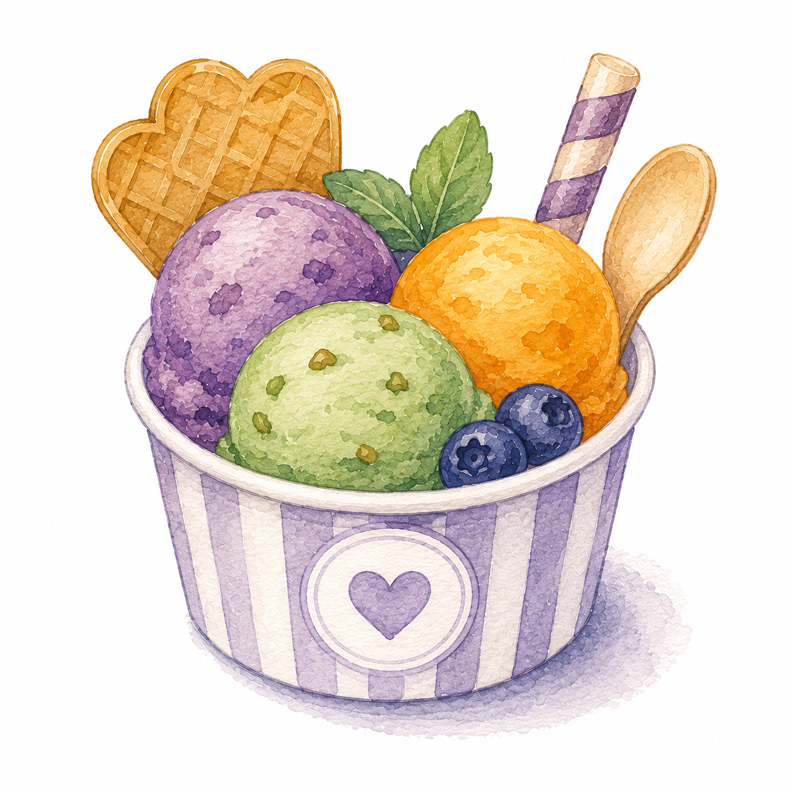

Reflexion öffnen →

Zu jedem Kapitel gehört eine Reflexion: ein Satz Karten, den Sie zu zweit oder zu dritt sortieren, ordnen und begründen. Sie steht nach dem Kapitel — wenn Sie das Skript gelesen und die Aufgaben gerechnet haben. Es geht nicht mehr darum, etwas Neues zu finden, sondern darum, die Gedanken zu ordnen: Was gehört zusammen, was unterscheidet sich, und woran erkennt man das?
Vom Zählen zur Wahrscheinlichkeit
Festigung
Sechs Welten, quer durch alle vier Kapitel
Pädagogische Hochschule Luzern · MA01.07 · Herbstsemester 2026